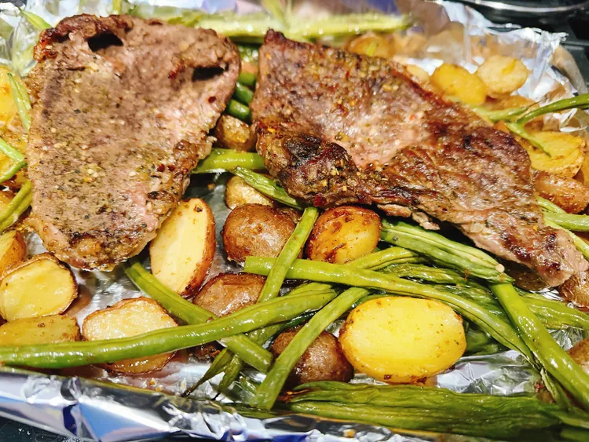

Sheet Pan Steak
This sheet pan steak dinner has a lot to love—the steak entrée and the potato and green bean sides cook at the same time on a sheet pan and cleanup is minimal.

Ingredients
-
1 pound tenderized round steak
- 1 (1.06 ounce) package Brazilian steakhouse marinade mix, such as McCormick® Grill Mates® Brazilian Steakhouse Marinade
-
1/4 cup oil
-
1/4 cup water
-
1 tablespoon red wine vinegar
-
3 cups baby potatoes, halved
-
1 pound French green beans, trimmed
- 1 (1.25 ounce) package toasted onion & garlic potato seasoning, such as McCormick® Toasted Onion & Garlic Potato Seasoning
-
2 tablespoons oil
Directions
- Place steak in a resealable plastic bag. Whisk together marinade mix, 1/4 cup oil, water, and red wine vinegar in a small bowl; pour into the bag. Reseal the bag, pressing out excess air, and squeeze bag to coat steak. Marinate steak in the refrigerator for a minimum of 30 minutes or up to overnight.
- Preheat the oven to 325 degrees F (165 degrees C). Line a baking sheet with foil.
- Place baby potatoes, green beans, and 2 tablespoons oil in a large resealable plastic bag; toss well to coat. Sprinkle in potato seasoning, reseal the bag, and toss again.
- Spread vegetables in a single layer on the prepared sheet; add steak on top of vegetables.
- Bake in the preheated oven until potatoes are tender and steaks are firm and reddish-pink and juicy in the center, about 1 hour. Turn on the broiler, and broil steak for 3 minutes. Turn steak over and broil 3 minutes more. An instant-read thermometer inserted into the center should read at least 130 degrees F (54 degrees C). Serve immediately.